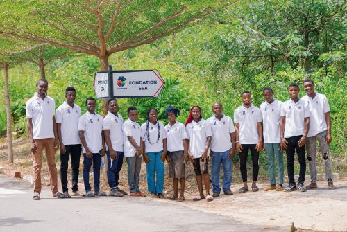
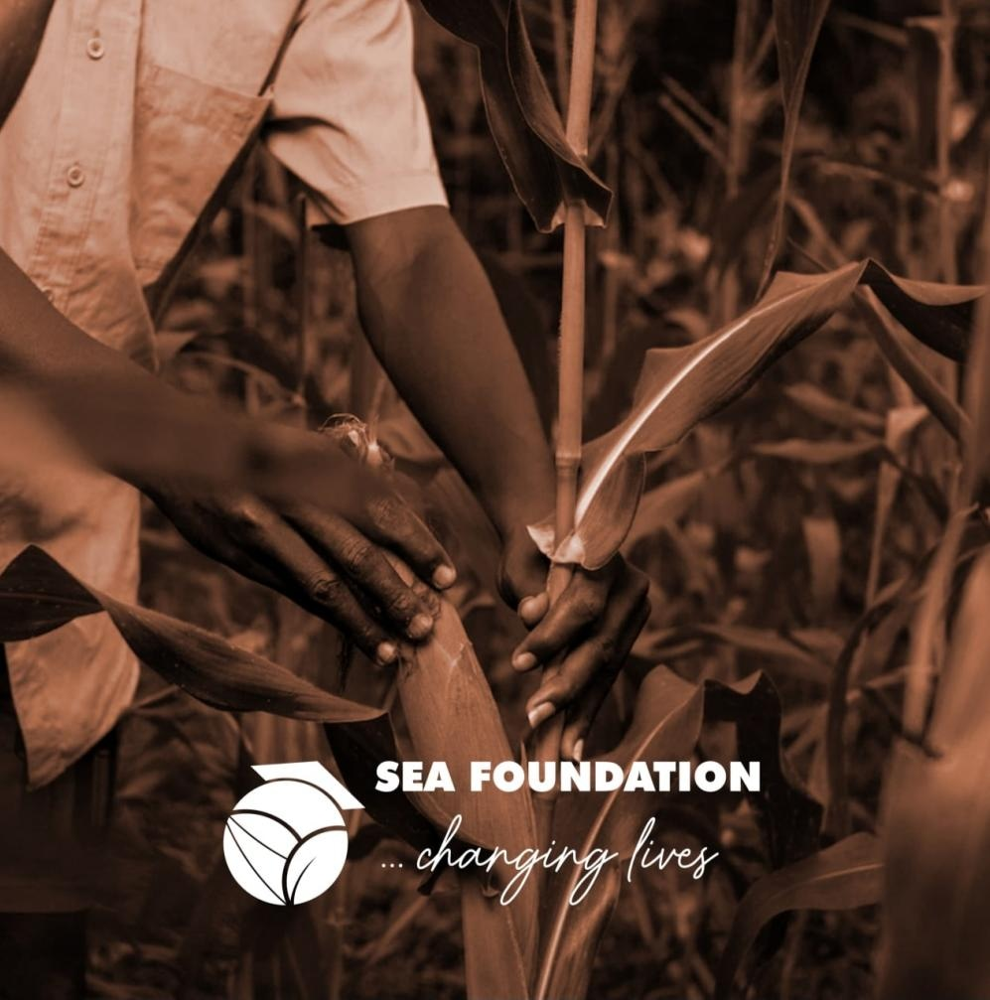

Retrouvez ici les événements datés présentés par SEA Foundation. Cette sélection reprend les informations déjà publiées sur le site.
Rencontres & initiatives

Former les jeunes aux nouvelles pratiques agricoles
Un projet de formation pour accompagner les jeunes vers de nouvelles pratiques agricoles et des compétences connectées.
Découvrir les actions
Valoriser les huiles usagées grâce à un atelier dédié
Un atelier Innov’ert consacré à la transformation et à la valorisation des huiles usagées.
Découvrir les actionsÉchanger autour des enjeux de gouvernance migratoire
Une participation aux échanges consacrés aux enjeux de gouvernance migratoire.
Voir les actualités